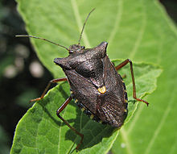

Estos tipos de insectos hacen referencia a las chinches (suborden Heteroptera) y los pulgones, cochinillas y cigarras (Homoptera). En total, suman más de 80 000 especies, por lo que se trata de un grupo muy diverso que engloba insectos acuáticos, fitófagos, depredadores e, incluso, parásitos hematófagos.
Las chinches presentan hemiélitros, es decir, sus alas anteriores son duras en la base y membranosas en el ápice. Los homópteros, sin embargo, tienen todas sus alas membranosas. La mayoría poseen unas antenas bien desarrolladas y un aparato bucal picador-chupador.
